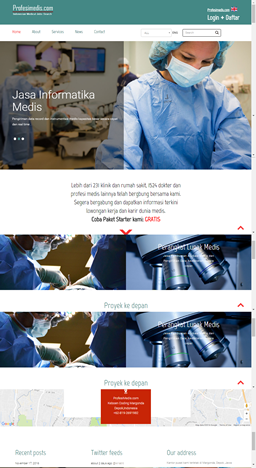

3. Profesimedis.com : Website Sosial Media dan Lowongan Kerja Medis Terbesar
Profesimedis.com adalah salah satu lini bisnis Medicrec di bidang pengembangan aplikasi, memiliki visi menjadi Medical-Social Media App TERBESAR di Indonesia, dengan misi menghubungkan para profesional medis dan berbagai instasi medis untuk berbagai keperluan, di antaranya mencari kerja, informasi seminar, pendidikan, pelatihan, dan event-event lain.
Website didesain secara responsif, dinamis, database-driven dan dua bahasa. Dibuat dengan bahasa pemrograman Python dan framework Django, bahasa pemrograman yang sama dengan website Google, Youtube, Instagram, Reddit, dan Pinterest !
Website profesimedis.com

Selain versi web, Profesi Medis juga akan segera me-launching versi Smartphone (mobile).